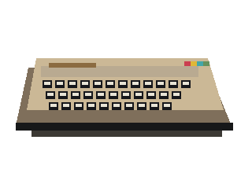
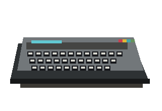
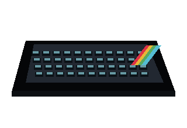
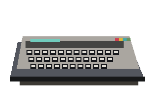
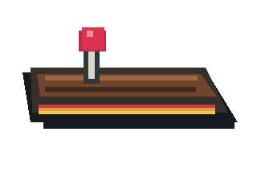

Arcade
Máquinas y juegos recreativos clásicos.
SELECT PLAYER
Un recorrido por ordenadores, consolas y recreativas que marcaron una época.
Las fichas son una propuesta de catálogo para la futura web. No constituyen un inventario verificado de los equipos del museo.

6 categorías y sistemas de ejemplo
Máquinas y juegos recreativos clásicos.

Un clásico de la informática doméstica.
Un referente de los ordenadores de 8 bits.

El mítico ordenador creado por Sinclair.

Una familia de equipos y videojuegos.

Una consola emblemática de su época.
Los equipos históricos cuentan historias que van más allá de sus especificaciones: quién los utilizaba, para qué servían y cómo cambiaron el acceso a la tecnología. El catálogo definitivo podrá incorporar fotografías reales, referencias y estado de conservación.